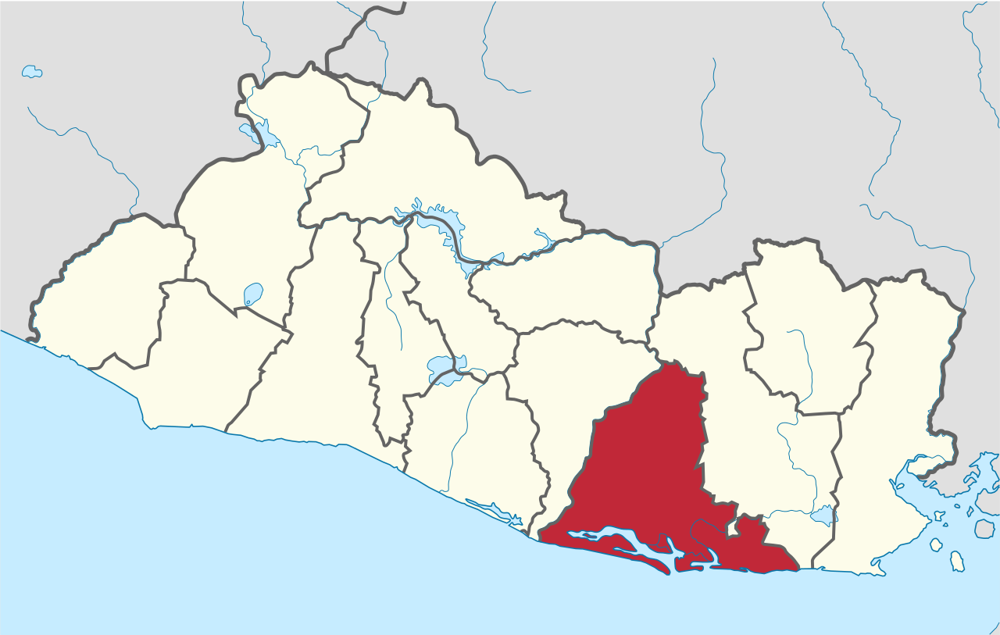
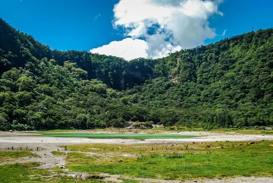

Datos históricos Importante
Usulután fue habitado originalmente por grupos lencas.
Hacia el siglo XV, sin embargo, fueron conquistados por pipiles.
Durante la época de la conquista, los residentes repelieron durante un mes a las milicias españolas en el año 1529,
quienes estaban bajo el mando de Diego de Rojas. Asimismo, en 1539 hostigaron a una avanzada de Pedro de Alvarado en la zona de la actual Bahía de Jiquilisco.
No fue hasta 1553 que Diego de Holguín logró la pacificación del sitio.
Lista de Municipios
- Alegria
- Berlin
- California
- Concepcion Batres
- El Triunfo
- Ereguayquin
- Estanzuelas
- Jiquiliscos
- Jucuapa
- Jucuaran
- Mercedes Umaña
- Nueva Granada
- Ozatlan
- Puerto el Triungo
- San Agustin
- San Buenaventura
- San Dionisio
- San Francisco Javier
- Santa elena
- Santa María
- Tecapán
- Usulutan
Centro Turisticos
- Bosque de Chaguantique
- Isla El Espiritu Santo
- Peninsula San Juan del Gozo
- Isla Madre Sal
- Laguna de Alegria
- Mirador de las Cien Gradas
- Volcan Tecapa
- Cerro Oromontique
- La Cruz Berlin

Rios y Lagos
- LAguna de Alegria
- Laguna de San Juan
- Laguna Dominguez
- Laguna El Chaparral
Cerros y Volcanes
- Volcan de Sierra Tecapa
- Cerro el Tigre
- Cerro Verde
Personajes Principales
- Alberto Masferrer
- Armando Rodriguez Portillo
- Vicente Rosales